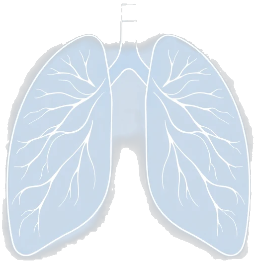

Paso 1: Define tu Estado Vibracional
Paso 2: Visualiza tu Energía Pulmonar

Paso 3: Activa la Frecuencia Sanadora
Selecciona una frecuencia para comenzar la reprogramación celular. Se recomienda el uso de auriculares.
Sonido detenido.
Paso 4: Técnica de Respiración Guiada
Sigue la animación para sincronizar tu respiración. Esta técnica ayuda a calmar el sistema nervioso y mejorar la oxigenación.
Paso 5: Meditación Cuántica Guiada
Embarca en un viaje de 10 minutos hacia el interior de tus pulmones a nivel cuántico. Conecta con la energía universal y dirige la sanación a cada célula. Se recomienda el uso de auriculares.
Paso 6: Tu Diario de Sanación
Registra tus mejoras, sensaciones y sueños. El seguimiento de tu progreso es una parte poderosa del proceso de sanación.